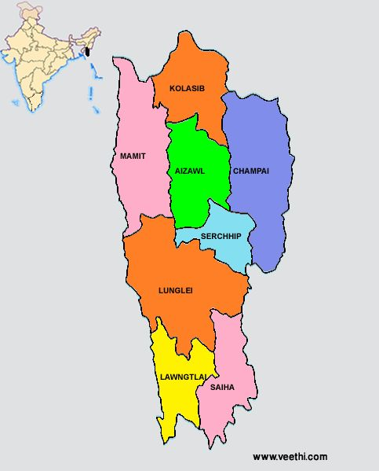

| Name: | Mizoram |
|---|---|
| Capital: | Aizawl |
| Language: | English, Mizo |
| Chief Minister: | Zoramthanga |
| Total Districts: | 11 |
| Population: | ~1.1 million (as per 2011 census) |
| Formation: | 20 February 1987 |
| Area: | 21,081 km² (23rd largest in India) |
| Borders: | Manipur, Assam, Tripura, Bangladesh, Myanmar |
| Coastline: | None (Landlocked State) |
Know more